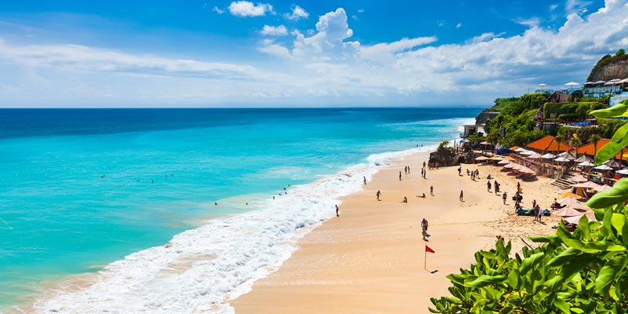

Dikenal sebagai Pulau Dewata, dengan keindahan alam mulai dari gunung api, lahan persawahan dengan terasering bertingkatnya, Bali memancarkan suasana tenang dan damai. Tak hanya itu, Bali juga dikenal sebagai surga bagi para peselancar! Kekayaan budaya Bali yang penuh dengan tarian-tarian eksotis dan upacara adat, hingga hasil karya seninya. Bali juga memiliki resor pantai yang mewah serta kehidupan malam yang begitu menarik. Sepanjang Sobat Pesona menjelajahi Pulau Bali pun, kamu dapat menemukan banyak Pura dengan ukiran etnik yang cukup rumit.